look at documentation of my show "love" at a maior, viseu, portugal
my online art show "wandering against dominant time" is up rn !!
alyssa davis gallery, curated by giovanna olmos for the show dead angle in 2019

Untitled, 2019
cardboard, shoe sole, cloth, shoe-shine box, bells, foam

Untitled, 2019
plexiglass, color pencil on paper, color pencil and acrylic on paper, string, foam, gifted pillow, armband, wrapped book
looking into spotless rain was a show I did with Cici Wu and Dachal Choi
In this show I was thinking about neighbors, access and exclusion, the sharing of resources, and where I end and you begin
I also did a performance as lima rei at the closing reception
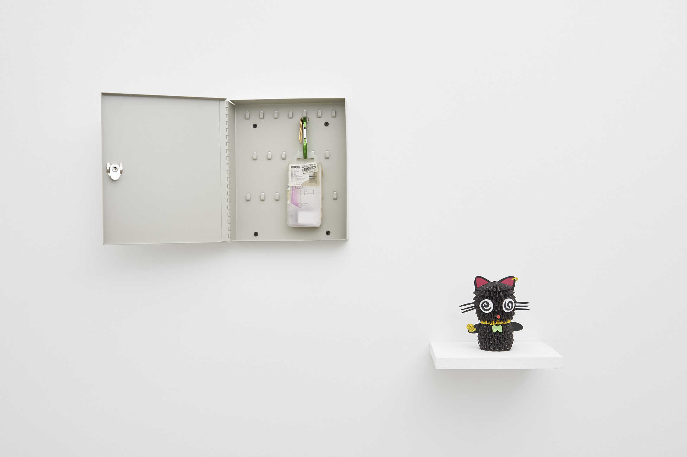
Untitled (multidirectional scam) with Key Cluster #1, 2018
key locker, various keys, bike patch kit, charcoal and pen on wax paper, zhezhi cat sculpture
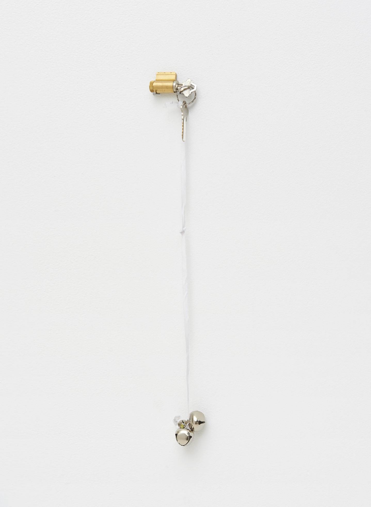
Key Cluster #2 (from Orianna), 2018
bells, string, keys, key cylinder

Boundary Formation, 2018
watercolor, color pencil, pen on paper, 22 x 28 inches
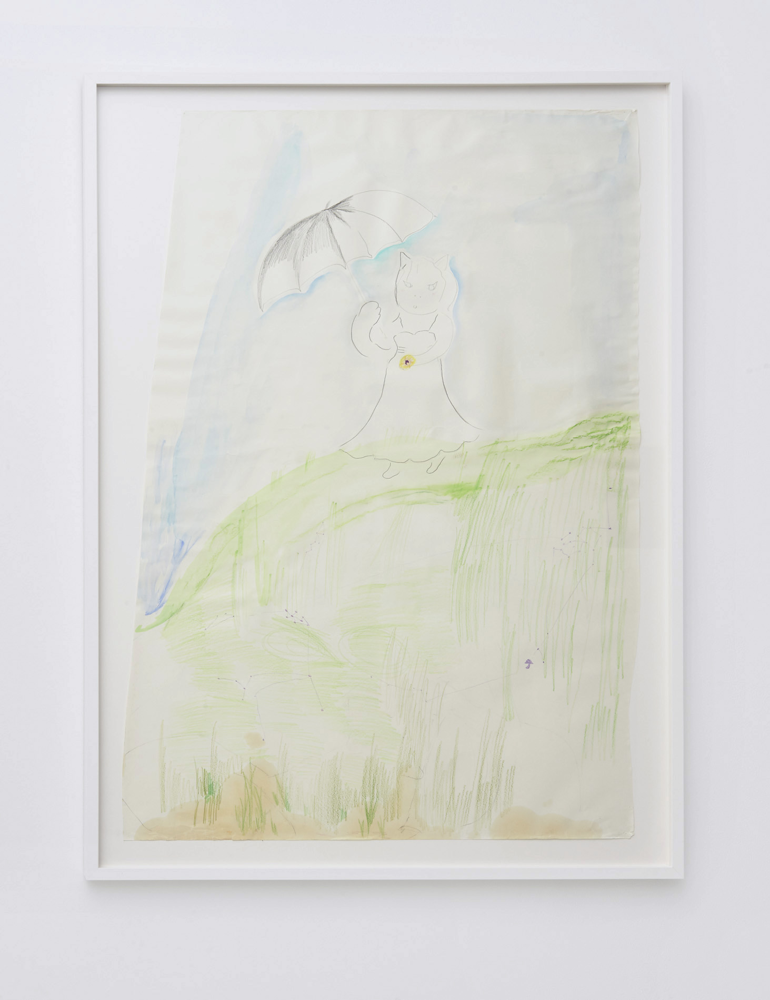
At the edge of time, 2018
watercolor, pencil, charcoal, oil on paper, 46 x 34 inches
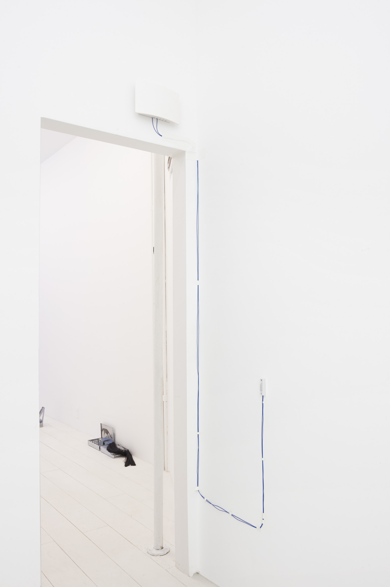
Hallway Song, 2018
NuTone doorbell, audio
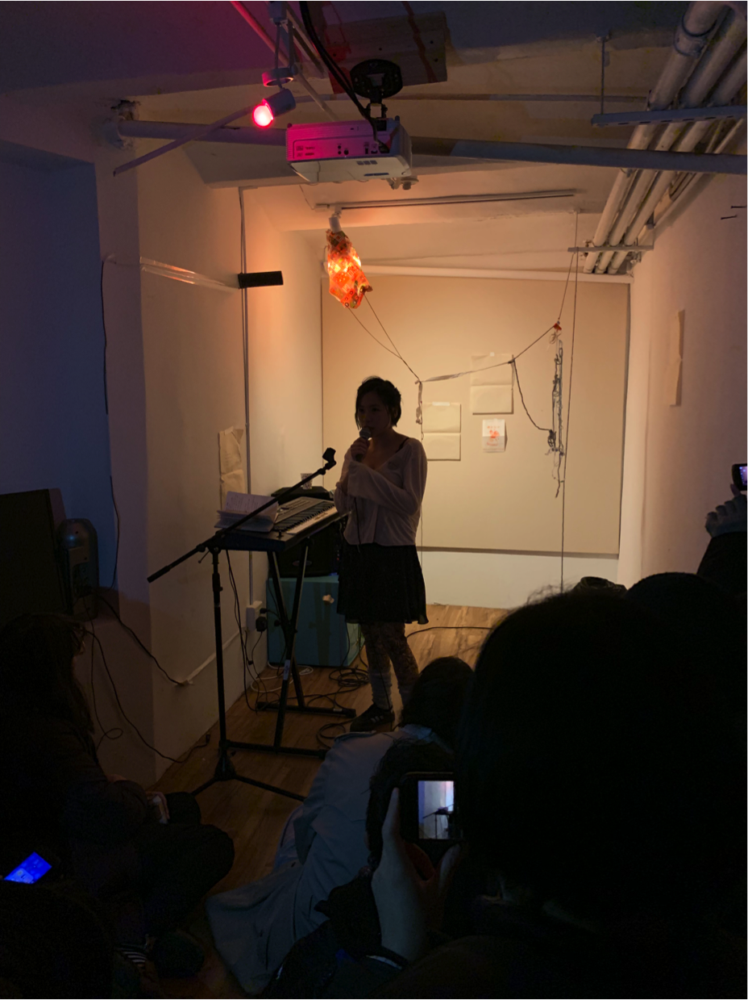
lima Rei performance, 2019 at Assembly Room
a site of unforgetting was a group show at Practice in Yonkers, curated by Banyi Huang.
I'm excited by the multiple dimensions that the sculpture is inhabiting, predicting my set in the future
but pieced together by different tokens of love from friends I stayed with during my summer tour
Other works include drawings of birds from the Yonkers flea market and a video of a performance I did at the Community Action Center
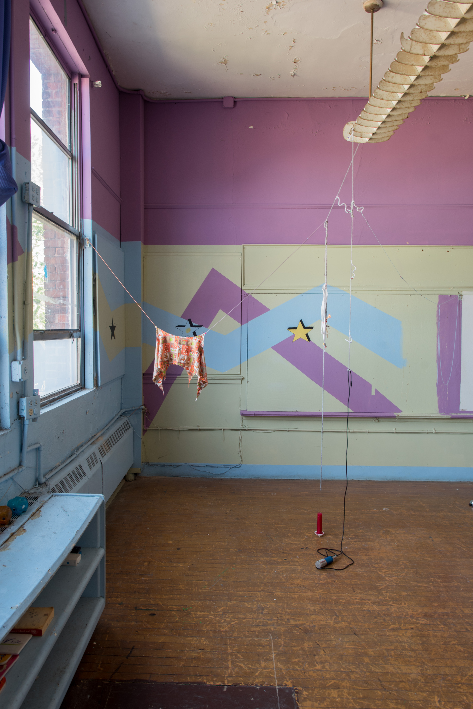
Untitled (August friendship futon assemblage), 2018
strings, beads, halter top, pipe cleaner, love candle, microphone
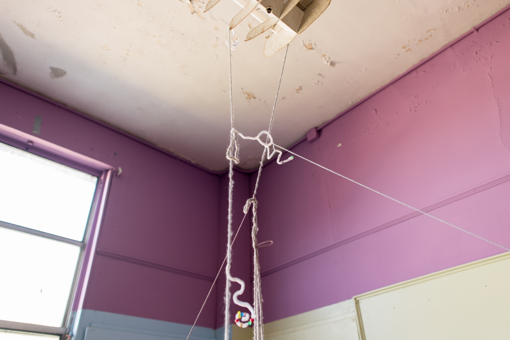
Untitled (August friendship futon assemblage), 2018
detail
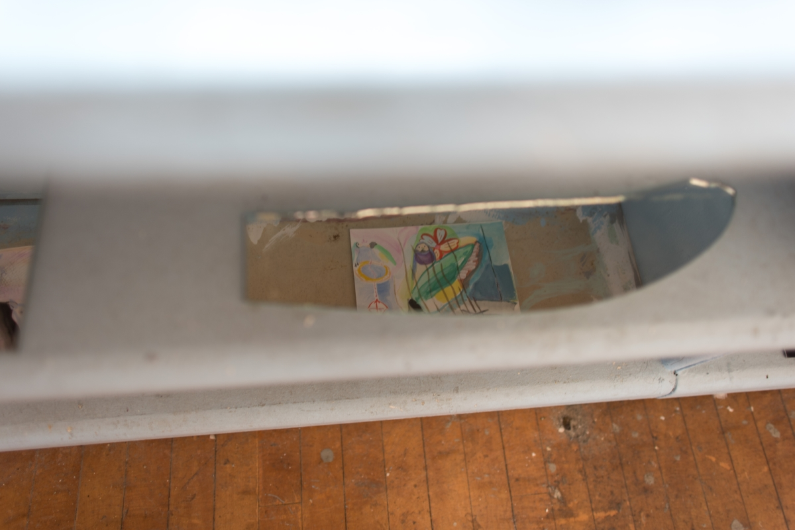
Untitled, 2018
Watercolor, gouache, marker, pencil on paper
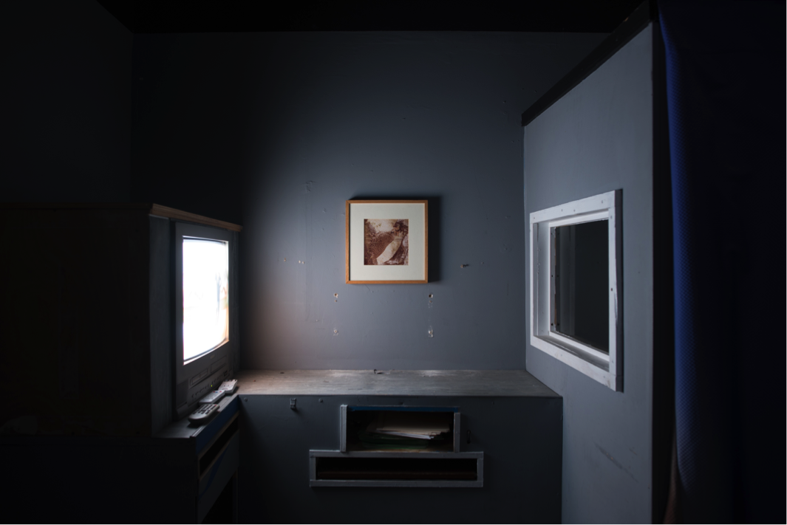
Installation view of Performance at Community Action Center, 2018
digital video

password:yonkers
Still and video of Performance at Community Action Center, 2018
digital video
Times Square was a group show.
this work is a mini construction of a bureaucratic careerist art world
maybe mashed with my dream world and love fantasies...

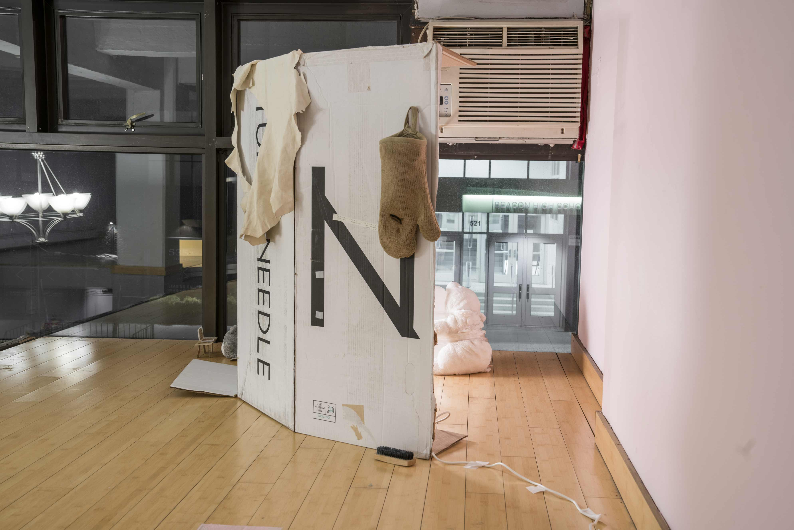
Installation view of Untitled, 2018
Discarded cardboard, watercolor on paper, leather, oven mitt, paper scraps of song lyrics,
tote bag, light bulb, stuffed animals, repurposed canisters from other artists
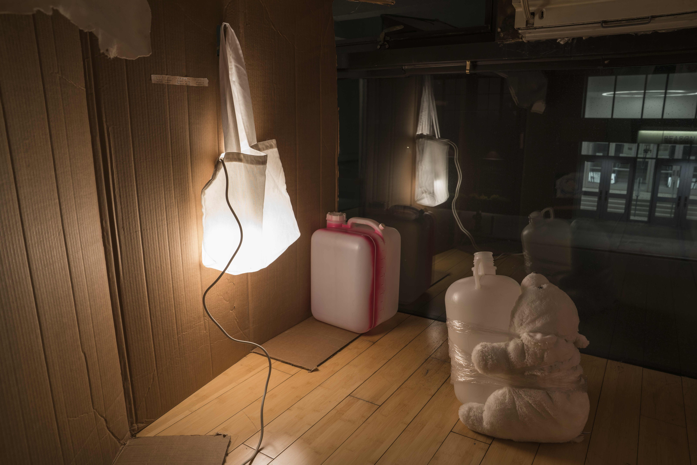
Detail view of inside of Untitled, 2018
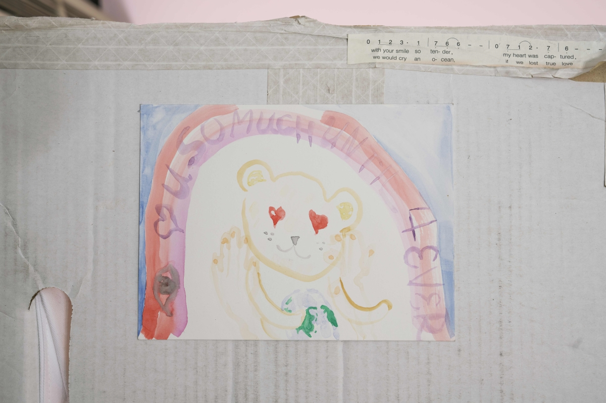
Watercolor on Untitled, 2018
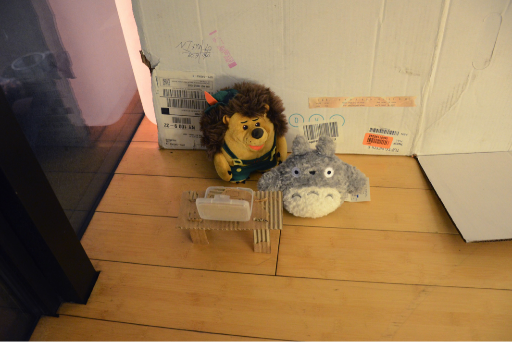
Another detail image Untitled, 2018